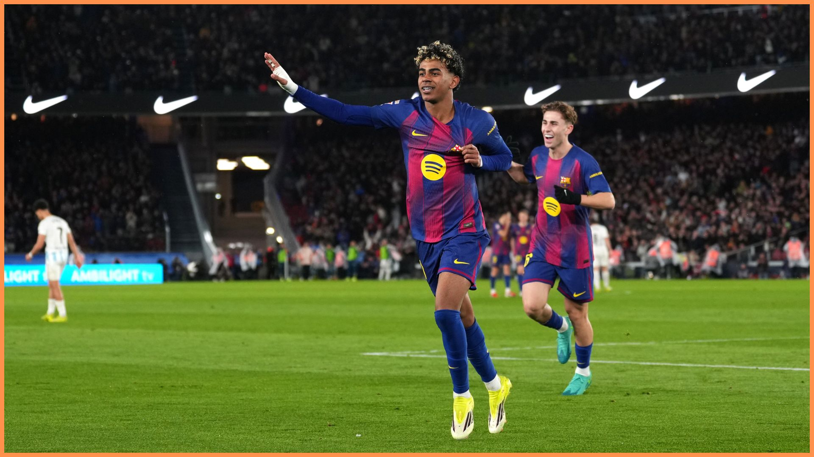
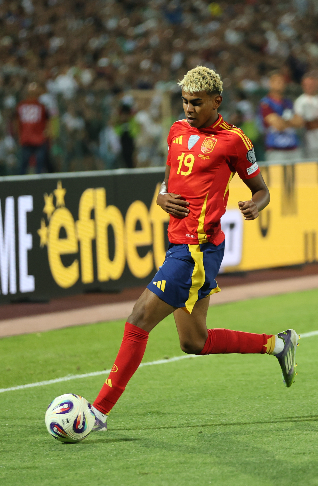
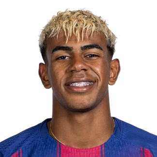

Talento
Conhecido por seu drible veloz e inteligência técnica superior.
Ver maisLamine Yamal é um atacante espanhol de destaque mundial, considerado a maior joia do FC Barcelona e da seleção espanhola.

Conhecido por seu drible veloz e inteligência técnica superior.
Ver mais
O jogador mais jovem a marcar gols na La Liga e na Eurocopa.
Ver mais
Titular indispensável na conquista da Euro 2024 pela Espanha.
Ver mais